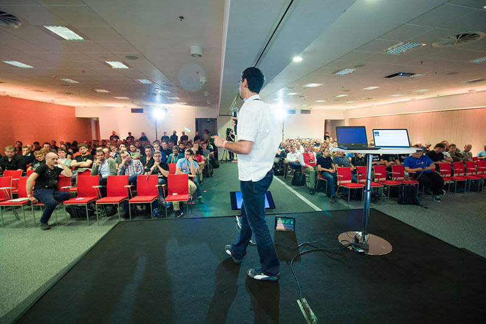
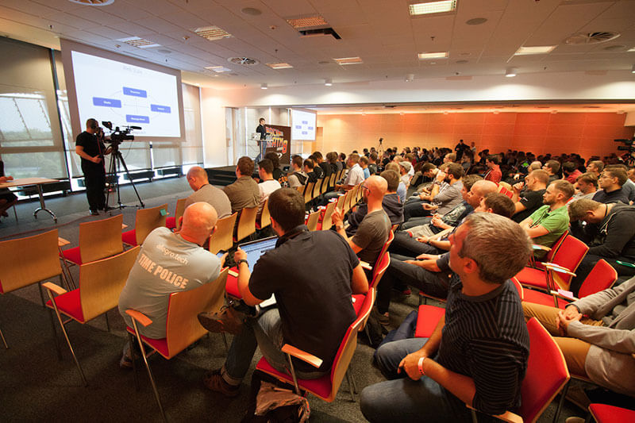

Allegro Tech Meeting
7 września 2016
allegro Tech to marka najlepszych inżynierów pracujących w naszej firmie. Powstała by świat dowiedział się kim jesteśmy i czym się zajmujemy.
ATM, czyli Allegro Tech Meeting to coroczne spotkanie wszystkich pracowników IT Allegro, na którym dzielimy się wiedzą o prowadzonych obecnie projektach, problemach jakie napotykamy oraz nietypowych rozwiązaniach, które zaimplementowaliśmy. Na co dzień taką wymianę wiedzy utrudnia ograniczony kontakt – pracownicy naszej firmy rozproszeni są po różnych miastach. ATM łamie te bariery.
 
„Od IT dla IT” to hasło przewodnie, które towarzyszy nam od samego początku, czyli 2009 roku kiedy to w Poznaniu odbyło się pierwsze dwudniowe wydarzenie w całości przygotowane przez inżynierów Allegro.
Tegoroczna edycja wydarzenia odbędzie się w Toruniu. To tam w dniach 7 września opanujemy Centrum Kulturalno-Kongresowe Jordanki by przez dwa dni słuchać, rozmawiać, dzielić się widzą oraz dobrze się bawić. ATM to dla nas coś więcej niż zwykła konferencja. To wydarzenie na które czekamy cały rok, a przez kolejny wspominamy jak było wspaniale.
Nie zabraknie inspirujących wykładów oraz motywujących lighting talks przygotowanych przez naszych inżynierów. A to wszystko w towarzystwie licznych robotów, które są tegorocznym tematem przewodnim wydarzenia.
Podobnie jak rok temu nie zamykamy się na świat zewnętrzny. W pierwszy dzień konferencji do naszych pracowników na widowni dołączą zaproszeni goście by wspólnie skorzystać z wiedzy płynącej ze sceny. Chcesz do nas dołączyć? Nic prostszego! Wylicytuj wejściówkę i wesprzyj Fundację Mam Marzenie: http://bit.ly/charytatywniAllegro
Fot. Centrum Kulturalno-Kongresowe Jordanki